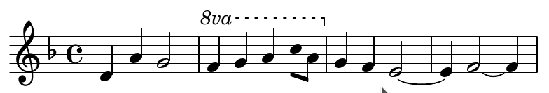

代码写谱 - LilyPond教程
说到五线谱制作，大多数人最先想到的一定会是界面简洁，功能强大的Overture。然而，作为一个使用键盘的工作效率大于鼠标的人，我更希望使用一款以写码的方式制谱的软件，而lilyPond完美地满足了我的要求。它的功能之强大比起Overture更胜一筹，制谱效率也让人十分满意。
为了方便自己日后查阅并向更多人推广这个工具，特此将我的学习过程整理成教程留存。教程大部分的内容都是来自lilyPond的官方文档，如果更愿意阅读英文可以直接查阅官方的文档。
环境配置与使用方法
安装lilyPond编译环境
lilyPond隶属于GNU项目，所以不出意外的话使用所有Linux发行版的官方包管理程序都可以下载到。比如，在Archlinux下，只需要执行pacman -S lilypond。Windows版本则可以到lilyPond的官网下载。
渲染出乐谱
lilyPond项目中有数个不同功能的二进制文件，其中lilypond专门用来将.ly文件渲染为乐谱文件。在作谱的时候，我们首先按照lilypond的语法来编辑.ly文件，再使用lilypond <file>来渲染乐谱。
lilypond默认渲染出的乐谱文件格式为pdf，可以通过调整参数来自定义输出格式。
配置MIDI播放环境
Linux下的midi播放器可以使用timidity++(Archlinux的aur仓库中有)，不过由于一般linux系统下不会自带音源，我们需要自己下载并配置midi音源才能播放lilypond输出的midi文件。
AUR仓库中有几款不错的音源，比如Freepats或soundfont-fluid，我个人倾向于后者。执行yay soundfont-fluid可以直接将这个音源安装到本机，安装完成之后修改/etc/timidity++/timidity.cfg，取消其中的soundfont一行的注释，将其内容改为soundfont /usr/share/soundfonts/FluidR3_GM.sf2，保存即可完成对音源的配置。
Part 1 基本记号
乐句
在lilyPond语法中，每一段乐谱都被称为一个musicexpr，也就是”音乐表达式”。每个musicexpr都是由一对大括号括起来的一组音符声明，在大括号前可以增加一些对这个musicexpr的描述。
在之后的部分，为了方便书写，我将musicexpr统一翻译为乐句。
乐句的嵌套
每个乐句都可以对其内容进行一定的设定，如果要将几种设定同时施加到一个乐句上就需要进行乐句的嵌套了。乐句的嵌套本质上可以看成是对数个乐句施加了一层新的属性。
乐句的赋值
我们可以在lilypond中声明一些变量，并用\变量名的方式去引用它们。变量的声明格式为变量名 = 乐句。在我们引用一个变量时，它所指向的乐句将会在引用位置展开。
音高
音高声明
lilypond语法中的音高以小写英文字母为基准音高，由后缀来决定音高的调整。常用的后缀有：
- 每多一个
,表示在基准音的基础上低一个八度，'则表示高一个八度。 is后缀表示升号(sharp)，es后缀表示降号(flat)。对于重升和重降，只需要重复这两个后缀即可。- 表示节奏的后缀，几分音符就是数字几。
例如，cis''4表示一个四分音符时值的高音C-sharp。
在乐句中使用音高声明
在乐句中，每一个音高声明都唯一对应着一个音符。每个乐句都是由一连串音高声明和一些描述性声明所组成的，lilypond会自动按照这个乐句的拍号(默认为4/4拍)划分小节。我们建议将每一个小节写为乐句中的一行，这样更方便我们日后读谱。
和弦
如果要声明一个和声或和弦，只需要用尖括号括起和弦中的各个音符即可。q声明代表复制前一个和弦声明。
绝对音高和相对音高
控制绝对音高和相对音高的描述分别是\absolute和\relative。\absolute <musicexpr>所声明的乐段中所有音高标记都以低音C为基准音，这也是没有音高声明的乐段所默认采用的校准方式。\relative <basepitch> <musicexpr>所声明的乐段中音高的计算方式则比较复杂：
- 如果一个音符后没有八度改变后缀，它所在的八度会被选为一个能使它与上一个音符的音程小于五度的八度。
- 八度改变后缀会将音符的音高在第一条规则计算出的音高基础上提高或降低一个八度。
- 第一个音符的音高按照第一条规则与
<basepitch>音高相关。 - 涉及到和弦后的计算方式更加复杂，这边不予详述，可以参考官方文档中的描述。
虽然相对音高的计算比较复杂，但如果熟练之后应用相对音高会非常便利。我们在之后
高音和低音谱号
描述性语句\clef可以用于指定和切换谱号。在一个小节的声明之前插入一句\clef声明可以指定从这个小节开始往后的小节所在的谱号。\clef bass会将谱号设定为低音谱，而\clef treble则会设置为高音谱。没有\clef声明的小节默认采用高音谱号。
另外两种谱号，中音和次中音谱号分别对应于\clef alto和\clef tenor。更多的谱号可以参考官方文档的1.1.3节。
升号与降号
在之前已经讲过升降号的声明，但没有涉及到还原号，这是因为还原号是不需要特殊声明的。在lilypond中，没有进行升降号声明的音符都会被处理为标准音高，也就是说cis c会被渲染为一个升C后接一个还原C，而不是两个升C，这和五线谱中升降号保持的法则是不同的。不过，渲染出的乐谱仍按五线谱标准显示。
如果想要在不需要还原号的位置强行显示还原号，可以在对应的音符后加!符号。如果要为变音记号加上括号，可以在对应的音符后加?符号。
设置调号
在一个小节前使用\key声明可以决定从这个小节开始往后部分的调号。调号由一个音高声明和一个大小调声明组成。大小调声明可以是\major(大调)或者\minor(小调)。
一个调号声明的例子：\key bes \major声明一个降B大调调号。
需要注意的是调号声明仅会打印出一个调号，并不会有其他的作用。
转调声明
有些时候我们需要将一段乐谱进行转调，如果一个个音符去修改未免工作量过大。乐句声明\transpose为我们提供了一种便利的转调方式。嵌套在带有\transpose声明的乐句内的所有乐句都会按照这个声明规定的转调方式进行转调。
\transpose声明的格式为\transpose <basepitch> <nextpitch>，渲染器会计算<basepitch>和<nextpitch>之间的音程，并将整个乐句中嵌套的所有乐句中的所有音符向上移一个等长的音程，同时改变这些乐句中的调号(如果声明过)。
高八度和低八度记号
\ottava <scale>声明可以用于添加高八度和低八度记号。<scale>的取值为#x，其中x为升高或降低的八度个数。如果x为正整数则表示升高，否则表示降低，为0表示还原到原来的高度。
需要注意的是，这个记号并不会改变音符的实际音高，因此如果在应用记号后不手动调整音高，音符就会在谱面上做相应的调整以适应原来的音高。
下面是一个例子：
1 | \relative c' { |
渲染出的谱面是这样的：

节奏
音符时值
正如之前说过的，在音符声明后加数字可以声明一个对应时值的音符，如b4声明四分音符，g32声明三十二分音符等等。在数字后面加.可以在音符后加浮点，其时值增加规则和乐理知识中相同。
如果未加声明，后面的音符会自动继承前面音符的时值。如，c4 d e f会渲染出四个连续的四分音符。
\autoBeamOn和\autoBeamOff可以打开或关闭切分音之间的自动连线。自动连线机制默认是打开的。
三连音
声明三连音或多连音均可以使用\tuplet声明。其格式为\tuplet <fraction> { <notes> }，其中<fraction>是一个分式，分母为整个tuplet的总时值，分子为等分的份数。例如，5/4声明一个平分四分音符的五连音。
需要注意的是，<note>中的音符一定要标定对应的时值。如果要声明一个平分四分音符的三连音，就必须将<note>中的音符声明为8分音符，否则渲染会出现偏差。
拍号的声明
一个乐句的默认拍号是4/4拍，但我们可以使用\time声明显式地修改拍号。\time N/M可以将乐句的拍号修改为N-M拍(有基本乐理知识的人应该都明白N-M拍是什么意思，这边不予详述)。
\defaultTimeSignature和\numericTimeSignature可以用于两种拍号表示方式的切换。
如果我们声明了一个比较奇怪的节奏型(比如《哈德曼的妖怪少女》的7/8拍)，lilypond默认的符尾连接方式会失效，需要我们手动设置，否则所有时值小于等于八分音符的音符符尾全都不会相连，如：
1 | \relative c' { |
手动设置的方式是在\time后面加一个#'(<pattern>)记号。<pattern>是一连串数字，这些数字将每个小节中的音符依次分为大小等于每个数字的组，同组间的音符会有符尾连接，如：
1 | \relative c' { |
隐式地改变音符的时值
有些时候我们希望在改变音符时值的同时不影响乐谱的外观，这时我们可以在一个音符声明的后面加一个*x/y后缀，其中x/y是一个分数，代表改变后的时值(/y部分可以缺省)。
连音线
连音线只能连接两个相同音高的音符。在两个这样的音符之间加一个~即可为它们加上连音线。
如果需要给被小节线分隔的两个音打上连音线，我们可以利用lilypond的自动切割功能，即在第一个音符处声明一个时值等于两个音符时值之和的音符，lilypond会自动将其切割为两个被连音线连接的跨小节音符。
当两个和弦声明被连音线连接时，和弦中所有等音高的音符会被连音线连接，而不同音高的不会。
更多关于连音线的线条形式或曲线属性的设置可以参考官方文档中的说明。
休止符
一般的休止符由字母r和表示时值的后缀组成。如果用s取代r，则可以声明一个不可见的休止符。
速度标志
一般的乐谱开始位置都会有一个标志来表示乐谱的演奏速度，这种标志可以用于设定节拍器，因而称为Metronome mark。\tempo声明可以用于声明这种标志。
\tempo最常见的用法是后跟<duration> = <speed>，其中<duration>是一个表示速度标记中左边那个音符时值的数字，<speed>是速度标记中右边那个数字。另一种没有那么精确的用法是\tempo "<text>"，其中<text>可以是各种用于描述速度的标记，如Allegreto(快板)。这两种用法可以混用，混用时速度标记会被小括号括起来。
弱起小节
在一些乐曲中第一个小节是不完整的：我们使用弱拍作为乐曲的开始而非惯用的强拍。在这种情况下，需要使用\partial <duration>来声明这个不完整的小节，其中<duration>是小节更改后的长度。
特殊的小节线
我们可以通过\bar "<symbols>"声明来显式地声明一个小节线。这个小节线不受自动小节划分的限制，可以安放在任何位置。我们可以通过<symbols>来显式定义小节线的样式，<symbol>由几种字符组成：
:代表小节线中的冒号，一般与重复小节线有关.代表粗小节线，与重复小节线和终止线有关|代表普通小节线
大部分小节线都可以用这三种符号的排列来表示。
装饰音
在一个音符声明前加上\grace标记可以让这个音符成为装饰音。如果要声明多个连续的装饰音，可以用大括号将这些音符括起，在大括号前加\grace。
增强表现力的符号
增强表现力的符号一般绑定在某个音符上，其声明形式为<note>\<symbol>，其中<note>是一个音符声明，<symbol>是特定的标号。
表示处理方式
常用的加在单个音符上的标号有\staccato(跳音符)，\fermata(延音符)，\accent(重音符)，\trill(颤音符)等。完整的符号表可以参照官方文档。
除了标准声明形式之外，还有一些常用的简写来减轻我们的工作量，比如->与\accent等效，-.与\staccato等效。
表示音符强弱
与音符绑定的强弱符也可以用这个形式来声明，其对应的symbol与强弱符在谱面上的标号一致，如\pp或\sf。渐强渐弱符需要一个起点音符和一个终点音符：起点音符与\>或\<绑定，终点音符与\!绑定。另一种形式的渐强渐弱符只需要在起点绑定一个\cresc或\dim标号即可。
连唱线
连唱线开始位置的音符需要加一个(后缀，而结束位置的音符需要加一个)后缀。连唱线可以嵌套。
琶音
琶音的声明用于和弦。在一个和弦后绑定\arpeggio记号可以在这个和弦上加琶音线。
颤音
之前提到过的\trill记号用于声明在单个音符上方的颤音符tr，另一种有起止位置的颤音符可以以开始音符绑定\startTrillSpan，结束音符绑定stopTrillSpan的方式声明。
复调
用<< >>括起来的两个或以上的乐句可以并行演奏，这种记谱方式称为polyphony(复调)。
如果不加显式的标记，这些乐句会被默认地放入同一个声部中，这通常会导致音符在乐谱中的碰撞，从而使某些音符渲染失败或不正常渲染。通常在进行复调作谱时，会用这几种方式将几个乐句安排到不同的声部中：
- 在每个乐句的内部开始位置加一个
\voiceOne～\voiceFour的声明以指明这个乐句属于哪个声部，同时在每个乐句的前面增加\new Voice声明，为它们分别创造新的声部。 - 在乐句之间加入
\\记号，这样lilypond会自动为这些乐句分配不同的声部。
乐器记号
\new或\context声明被用于声明一组乐谱。
最基本的乐器是Staff，\new Staff可以声明一组最简单的钢琴五线谱。除了普通的Staff之外，还有DrumStaff，RhythmicStaff等乐谱格式可以使用。
乐谱组
绝大部分器乐乐谱都需要乐谱的分组，比如钢琴谱的左右手，交响乐谱的各种乐器。用之前提到过的复调记号就可以实现乐谱的分组：
1 | << |
效果如图：
可以在复调记号之前使用乐谱组声明来改变乐谱的外观：
1 | \new StaffGroup << |
效果如图：

也可以使用钢琴谱声明：
1 | \new GrandStaff << |
效果如图：

乐器属性
可以在\new Staff声明之后紧跟一个\with {}声明块来描述这个乐器的属性。例如：
1 | \new Staff\with { |
可以在乐谱前显示Piano字样。
文本
在音符上下方添加文本
在一个音符声明上方添加文本可以使用^<text>，如果是下方则为_<text>，这和LateX的语法是相同的。<text>可以是简单的文本常量"aslkdj"，也可以是一些复杂的表达式，比如\markup语句块。
也可以用\mark <text>声明在音符之间的位置上方添加文本。
Markup语句块
\markup {...} 可以声明一个Markup语句块。你可以在Markup语句块中用各种LaTeX语法来格式化文本。常用的标记大致有：
- 改变字体格式
\bold\italic\underline\super(上标)\sub(下标)\smallCaps
- 改变字号
\huge\teeny\normalsize\fontsize #<num>
- 排版
\column {}：其中的元素只能是\line {}\center-column
\line {}：其中放置一行文本
- 字体
\sans\typewriter\roman
更多标记可以参考官方文档。
Part 2 特殊记号
踏板
\sustainOn和\sustainOff声明可以用来控制钢琴的踏板。
Part 3 IO
乐谱的输出
每段乐谱在输出时必须被包装在一个\score {}块中。除了乐谱部分，我们还可能需要一个\header {}块，在这个块中我们可以指定title = "..."，composer = "..."以及subtitle = "..."等。
一个\bookpart {}块代表乐谱本中的一部分，每个这种块中必须包含一个\header和一个\score块。
Appendix 乐理名词翻译
Pitch 音高
- octave 八度
- bass 低音
- treble 高音
- chord 和弦
- accidental 变音记号
- sharp 升
- flat 降
- natural 还原
- interval 音程
- major 大音程
- minor 小音程
- augmented 增音程
- diminished 减音程
Rhythm 节奏
- duration 时值
- tuplet
x连音 - tie 连音线
- measure 小节
- bar 小节线
- metronome 节拍器
- rest 休止符
- grace 装饰音
Expression 表现
- dynamic 强弱符
- slur 连唱线
- Arpeggio 琶音
- trill 颤音
- polyphony 复调